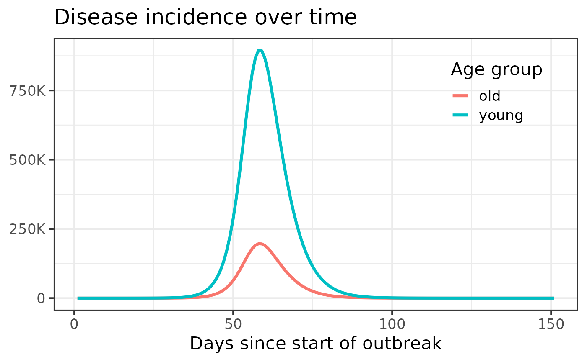
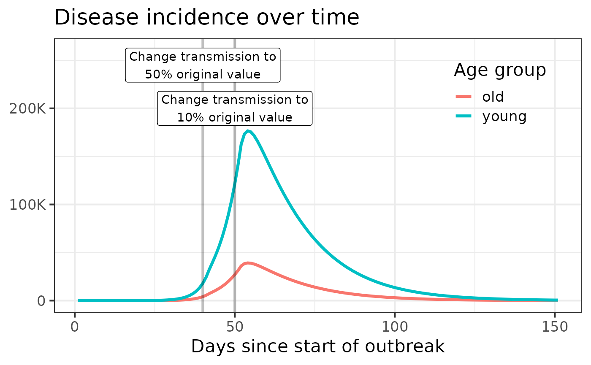

The goal of this package is to catalogue, document, and version iterations of the Early Pandemic Age-structured Compartmental model so that they can be pulled easily into project-specific pipelines to produce modelling outputs.
Set up model simulator
To work with a model, we need to set up its simulator. A simulator in
macpan2 is an object that includes model structure (state
names, flow expressions, etc.) along with a set of variable values (such
as components of flow rates, initial states) that ensure it is ready to
produce simulation results.
This package includes several models whose simulators can quickly and
easily be retrieved (see vignette("pkg-models")). It can
also work with locally defined models (see
vignette("local-models")).
Package model names can be listed with:
list_models()
#> [1] "five-year-age-groups" "old-and-young"To get a model’s simulator, we simply call:
model.name <- "old-and-young"
model_simulator <- make_simulator(
model.name = model.name
)
#> Warning in checkMatrixPackageVersion(): Package version inconsistency detected.
#> TMB was built with Matrix version 1.6.1.1
#> Current Matrix version is 1.5.4.1
#> Please re-install 'TMB' from source using install.packages('TMB', type = 'source') or ask CRAN for a binary version of 'TMB' matching CRAN's 'Matrix' packageBy default, make_simulator() will attach a set of
default values for variables in the model (components of flow rates,
initial states, etc.) to the model structure. It will also set a default
number of time steps. You can see all default values easily as
follows:
# load default values (initial state, params, etc.)
default.values = get_default_values(model.name)The definition of each default value is documented in
vignette("pkg-models").
Any of these values can be changed by passing the optional
update.values argument to make_simulator(). We
recommend first loading the entire list of default values and extracting
the specific value (list element) that you want to update, editing the
numeric quantity as desired, and then passing the modified list element
to make_simulator() via the update.values
argument, to ensure that format of value is preserved to remain
compatible with the model definition and macpan2:
# get default initial state
default.state = default.values$state
print("default state:")
#> [1] "default state:"
print(default.state)
#> S_y R_y E_y I_y H_y D_y S_o R_o
#> 31400000 0 1 1 0 0 6900000 0
#> E_o I_o H_o D_o
#> 1 1 0 0
# move some young susceptibles to the recovered class
new.state = default.state # copy over default value to preserve format
new.state["R_y"] = 1000 # modify specific elements
new.state["S_y"] = new.state["S_y"] - new.state["R_y"] # modify specific elements
print("new state:")
#> [1] "new state:"
print(new.state)
#> S_y R_y E_y I_y H_y D_y S_o R_o
#> 31399000 1000 1 1 0 0 6900000 0
#> E_o I_o H_o D_o
#> 1 1 0 0
# use updated state to make a new simulator
new_model_simulator = make_simulator(
model.name = model.name,
updated.values = list(state = new.state)
)Simulate a model
To simulate a model, just use the simulate()
function:
sim.output = simulate(model_simulator)Since the model simulator already has all required values attached, all required calculations can be performed to produce the simulation results.
For all models, simulation outputs are stored in a data frame with columns
time | state_name | value_type | valueThe output value_types are
-
state: the number of individuals in given state at a given time, -
total_inflow: the total inflow into a given compartment at a given time.
For instance, here is the number of individuals in each state,
stratified by the two age groups y (young) and
o (old), at time 10:
(sim.output
|> dplyr::filter(value_type == 'state', time == 10)
)
#> time state_name value_type value
#> 1 10 S_y state 3.139988e+07
#> 2 10 E_y state 7.888172e+01
#> 3 10 I_y state 2.644023e+01
#> 4 10 H_y state 5.068467e+00
#> 5 10 R_y state 7.329988e+00
#> 6 10 D_y state 7.329988e-01
#> 7 10 S_o state 6.899959e+06
#> 8 10 E_o state 2.621033e+01
#> 9 10 I_o state 9.945527e+00
#> 10 10 H_o state 2.328352e+00
#> 11 10 R_o state 3.674943e+00
#> 12 10 D_o state 3.674943e-01The total inflow into \(I\) compartments can be used to extract disease incidence by age over time:
(sim.output
|> dplyr::filter(
stringr::str_detect(state_name, "^I"),
value_type == 'total_inflow'
)
|> head()
)
#> time state_name value_type value
#> 1 1 I_y total_inflow 0.1000000
#> 2 1 I_o total_inflow 0.1000000
#> 3 2 I_y total_inflow 0.0990000
#> 4 2 I_o total_inflow 0.0990000
#> 5 3 I_y total_inflow 0.1455143
#> 6 3 I_o total_inflow 0.1195285We can plot the results using standard data manipulation and plotting
tools, like dplyr and ggplot2:

Scenarios
By default, make_simulator() will initialize a base
model. Some model definitions include optional scenarios on top of the
base model, such as interventions modelled through time-varying model
parameters. For instance, one could simulate a stay-at-home order by
reducing the transmission rate on a given date by some amount.
One can specify the scenario.name argument in
make_simulator() to attach the required model structure to
simulate a given scenario type. Scenario options and descriptions are
catalogued in vignette("pkg-models").
Here we demonstrate the old-and-young model with the
transmission-intervention scenario. By default, this
scenario reduces the transmission rate in each age group to 50% then 10%
of its original value on days 30 and 40, respectively:
values = get_default_values("old-and-young")
values[
c("intervention.day", "trans.factor.young", "trans.factor.old")
]
#> $intervention.day
#> [1] 40 50
#>
#> $trans.factor.young
#> [1] 0.5 0.1
#>
#> $trans.factor.old
#> [1] 0.5 0.1We specify that we want to use the change-transmission
scenario in the call to make_simulator():
model_simulator <- make_simulator(
model.name = "old-and-young",
scenario.name = "change-transmission"
)
sim.output = simulate(model_simulator)